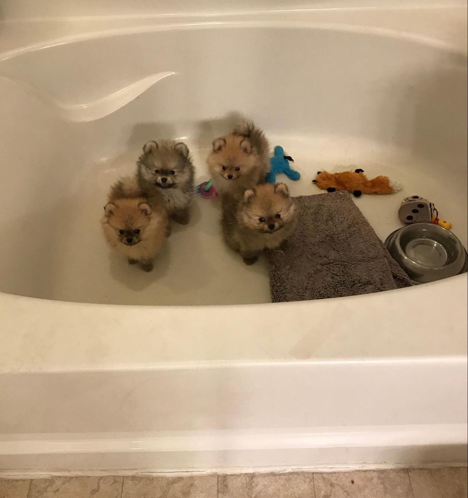

Pomeranian Breed Standard
Toy Group
General AppearanceThe Pomeranian is a compact, short-backed, active toy dog. He has a soft, dense undercoat with a profuse harsh-textured outer coat. His heavily plumed tail is set high and lies flat on his back. He is alert in character, exhibits intelligence in expression, is buoyant in deportment, and is inquisitive by nature. The Pomeranian is cocky, commanding, and animated as he gaits. He is sound in composition and action.
Size, Proportion, SubstanceThe average weight of the Pomeranian is from 3 to 7 pounds, with the ideal weight for the show specimen being 4 to 6 pounds. Any dog over or under the limits is objectionable. However, overall quality is to be favored over size. The distance from the point of shoulder to the point of buttocks is slightly shorter than from the highest point of the withers to the ground. the distance from the brisket to the ground is half the height at the withers. He is medium-boned, and the length of his legs is in proportion to a well-balanced frame. When examined, he feels sturdy.
HeadThe head is in balance with the body. The muzzle is rather short, straight, fine, free of lippiness and never snipey. His expression is alert and may be referred to as fox-like. The skull is closed. The top of the skull is slightly rounded, but not domed. When viewed from the front and side, one sees small ears which are mounted high and carried erect. To form a wedge, visualize a line from the tip of the nose ascending through the center of the eyes and the tip of the ears. The eyes are dark, bright, medium in size and almond-shaped. They are set well into the skull on either side of a well-pronounced stop. The pigmentation is black on the nose and eye rims except self-colored in brown, beaver, and blue dogs. The teeth meet in a scissors bite. One tooth out of alignment is acceptable. Major Faults: Round, domed skull; under-shot mouth; overshot mouth.
Neck, Topline, BodyThe neck is short with its base set well into the shoulders to allow the head to be carried high. The back is short with a level topline. The body is compact and well-ribbed with brisket reaching the elbow. The plumed tail is one of the characteristics of the breed, and lies flat and straight on the back.
ForequartersThe Pomeranian has sufficient layback of shoulders to carry the neck and head proud and high. The shoulders and legs are moderately muscled. The length of the shoulder blade and upper arm are equal. The forelegs are straight and parallel to each other. Height from elbows to withers approximately equals height from ground to elbow. The pasterns are straight and strong. The feet are well-arched, compact, and turn neither in nor out. He stands well up on his toes. Dewclaws may be removed. Major Faults: Down in pasterns.
HindquartersThe angulation of the hindquarters balances that of the forequarters. The buttocks are well behind the set of the tail. The thighs are moderately muscled with stifles that are moderately bent and clearly defined. The hocks are perpendicular to the ground and the legs are straight and parallel to each other. The feet are well-arched, compact, and turn neither in nor out. He stands well up on his toes. Dewclaws, if any on the hind legs may be removed. Major Faults: Cowhocks or lack of soundness in hind legs or stifles.
GaitThe Pomeranian's gait is smooth, free, balanced and vigorous. He has good reach in his forequarters and strong drive with his hindquarters. Each rear leg moves in line with the foreleg on the same side. To achieve balance, his legs converge slightly inward toward a center line beneath his body. The rear and front legs are thrown neither in nor out. The topline remains level, and his overall balance and outline are maintained.
CoatA Pomeranian is noted for its double coat. The undercoat is soft and dense. The outer-coat is long, straight, glistening and harsh in texture. A thick undercoat will hold up and permit the guard hair to stand off from the Pomeranian's body. The coat is abundant from the neck and fore part of shoulders and chest, forming a frill which extends over the shoulders and chest. The head and leg coat is tightly packed and shorter in length than that of the body. The forequarters are well-feathered and thighs and hind legs well-feathered to the hock. The tail is profusely covered with long, harsh, spreading straight hair. Trimming for neatness and a clean outline is permissible. Major Faults: Soft, flat or open coat.
ColorAll colors, patterns, and variations there-of are allowed and must be judged on an equal basis. Patterns: Black and Tan - tan or rust sharply defined, appearing above each eye and on muzzle, throat, and forechest, on all legs and feet and below the tail. The richer the tan the more desirable; Brindle - the base color is gold, red, or orange-brindled with strong black cross stripes; Parti-color - is white with any other color distributed in patches with a white blaze preferred on the head. Classifications: The Open Classes at specialty shows may be divided by color as follows: Open Red, Orange, Cream, and Sable; Open Black, Brown, and Blue; Open Any Other Color, Pattern, or Variation.
TemperamentThe Pomeranian is an extrovert, exhibiting great intelligence and a vivacious spirit, making him a great companion dog as well as a competitive show dog.
Even though a Toy dog, the Pomeranian must be subject to the same requirements of soundness and structure prescribed for all breeds, and any deviation from the ideal described in the standard should be penalized to the extent of the deviation. Approved December 9, 1996 Effective January 31, 1997